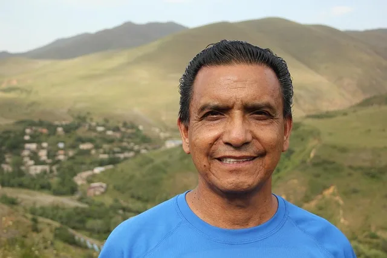

João Silva
Fundador e Diretor
Com uma paixão profunda pelos animais, João fundou a
ONG para oferecer um refúgio seguro e amoroso para pets em situação de risco.
João Pereira
Veterinário Chefe
Com mais de 15 anos de experiência,
João
lidera
a equipe veterinária, garantindo que todos os animais recebam os melhores cuidados possíveis.
Ana Costa
Coordenadora de Voluntários
Ana organiza e treina nossa
equipe
de
voluntários, assegurando que cada um tenha uma experiência gratificante enquanto ajuda nossos
pets.

Carlos Mendes
Especialista em Resgate
Carlos é responsável por
coordenar
as
operações de resgate, garantindo a segurança e o bem-estar dos animais durante todo o processo.